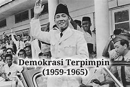
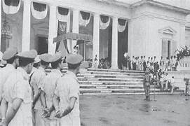

Latar Belakang
Adanya kegagalan konstituante dalam menetapkan dan membahayakan keselamatan bangsa dan negara, pada 5 Juli 1959 Presiden Sukarno mngeluarkan suatu keputusan bernama Dekrit Presiden. Dekrit Presiden dilihat sebagai usaha untuk mencari jalan dari kemacetan politik melalui pembentukan kepemimpinan yang kuat. Sehingga pada saat itu digunakan demokrasi terpimpin.
Tujuan
Tujuan diberlakukannya sistem demokrasi terpimpin yaitu: Untuk menggantikan demokrasi liberal yang dianggap tidak stabil untuk negara Indonesia. Untuk meningkatkan kekuasaan presiden pada masa itu yang awalnya hanya sebatas sebagai kepala negara menjadi pemegang kekuasaan tertinggi.
Pelaksanaan
Ekonomi
Sosial dan Budaya
Pendidikan
Pertahanan dan Keamanan
Peningkatan anggaran militer untuk memperkuat pertahanan negara.
Hasil
Beberapa prestasi tercapai, seperti penyelenggaraan Konferensi Asia-Afrika, namun juga terjadi inflasi tinggi dan ketidakpuasan rakyat.
Kelebihan dan Kekurangan
Kelebihan
- Meningkatkan persatuan nasional.
- Penguatan ideologi nasionalisme.
Kekurangan
- Pemusatan kekuasaan yang berlebihan.
- Krisis ekonomi dan inflasi tinggi.
Akhir
Masa Demokrasi Terpimpin berakhir pada tahun 1966 setelah munculnya Gerakan 30 September dan digantikan dengan era Orde Baru.